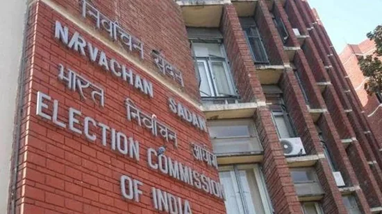

Of these, 2 seats are in Bihar, while one each in Maharashtra, Haryana, Telangana, Uttar Pradesh and Odisha. The counting of votes will be held on November 6.
By-elections for seven assembly constituencies in six states will be held on November 3, followed by counting of votes three days later, the Election Commission of India (ECI) said on Monday, announcing the schedule.
